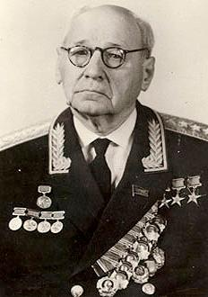

|
|---|
Андрей Николаевич Туполев(29 октября (10 ноября) 1888, Тверская губерния — 23 декабря 1972, Москва)Советский учёный и авиаконструктор, генерал-полковник-инженер (1968), доктор технических наук.В 1916—1918 годах Туполев участвовал в работах первого в России авиационного расчётного бюро; конструировал первые аэродинамические трубы в училище. Вместе с Н. Е. Жуковским был организатором и одним из руководителей ЦАГИ, где окончательно определилось призвание молодого инженера. В 1918—1936 годах был членом коллегии и заместителем начальника института по опытному цельнометаллическому самолётостроению. Опытным путём доказал, что кольчугалюминий (первоначально названный так по имени Кольчугинского завода во Владимирской области, на котором впервые в Советской России стали делать дюраль) является для самолётостроения достойной заменой непрочному дереву, с одной стороны, и тяжёлому железу — с другой. В 1925 году создал цельнометаллический двухмоторный самолёт ТБ-1, который отличался высокими лётными данными и считался в мире одним из лучших бомбардировщиков. В 1932 году был сконструирован усовершенствованный самолёт ТБ-3 (АНТ-6), с помощью которого в 1937 году была осуществлена высадка экспедиции на Северном полюсе. Также в 1932 году под руководством Туполева бригадой П. О. Сухого был сконструирован самолёт АНТ-25[3]. В 1934 году появился многомоторный самолёт АНТ-20 («Максим Горький»). Он имел восемь двигателей, полезную площадь более 100 м² и пассажировместимость до 60 человек. Туполев был создателем стратегически важных бомбардировщиков Ту-2 и Ту-4, а также первого реактивного пассажирского самолёта Ту-104. Благодаря усилиям Туполева в стране началось крупносерийное производство металлических самолётов, причем он же разработал технологию, которая ускорила процесс сборки этих машин. Конструктор руководил производством самолётов-разведчиков, истребителей, бомбардировщиков, транспортных, пассажирских, морских самолётов, а также торпедных катеров, аэросаней, гондол, мотоустановок и первых советских дирижаблей. Благодаря Туполеву спроектировано более 100 типов самолётов, 70 из которых были поставлены на серийное производство. Самолёты авиаконструктора эксплуатируются авиакомпаниями в десятках стран. |
Меню |
Фотография |
©2021 |
|---|